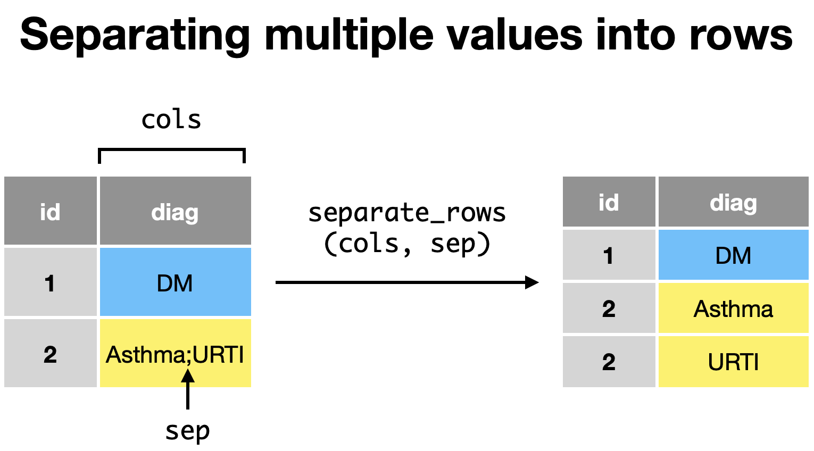

Tidying data#
Data needs to be structured and organized to facilitate analysis. The idea of tidy data is related to the concept of data normalization (e.g. Codd’s Normal Forms) in a relational database model. You may recall this in the earlier course on data modelling.
What is tidy data?#
In tidy data:
Each variable has its own column
Each observation has its own row
Both variables (columns) and observations (rows) form a table
Examples of untidy data#
Wide format#
Multiple values in a row#
Data preparation#
We will use a COVID-19 dataset from an Imperial College London study (https://www.imperial.ac.uk/media/imperial-college/medicine/sph/ide/gida-fellowships/Imperial-College-COVID19-symptom-progression-11-03-2020.pdf) to illustrate how we can tidy data for further analysis
In this dataset, data was collected from various sources from Hong Kong, Japan, Singapore and South Korea to examine the occurrence of symptoms and the progression of symptoms through time.
The variables include
new_id: patient iddate_report: date of reportcountry: country of originage: age of patientdate_onset: date of onsetsymptoms_at_onset: symptoms at onsetdate_first_consultation: date of first consultationdate_symp_prog(1-4): date of symptoms at timepoints 1-4symp_prog(1-4): symptoms at timepoints 1-4any_symptom: any reported symptomdate_hospitalised: date hospitalizeddate_death: date of deathdate_recovered: date of recoverysource_name: name of source of dataURL link (2/3): URL links for the data
library(tidyverse)
data <- read_csv("https://raw.githubusercontent.com/kennethban/dataset/main/subset_international_cases_2020_03_11.csv")
head(data)
── Attaching core tidyverse packages ───────────────────────────── tidyverse 2.0.0 ──
✔ dplyr 1.1.1 ✔ readr 2.1.4
✔ forcats 1.0.0 ✔ stringr 1.5.0
✔ ggplot2 3.4.2 ✔ tibble 3.2.1
✔ lubridate 1.9.2 ✔ tidyr 1.3.0
✔ purrr 1.0.1
── Conflicts ─────────────────────────────────────────────── tidyverse_conflicts() ──
✖ dplyr::filter() masks stats::filter()
✖ dplyr::lag() masks stats::lag()
ℹ Use the conflicted package (<http://conflicted.r-lib.org/>) to force all conflicts to become errors
Rows: 448 Columns: 23
── Column specification ─────────────────────────────────────────────────────────────
Delimiter: ","
chr (23): new_id, date_report, country, age, date_onset, symptoms_at_onset, ...
ℹ Use `spec()` to retrieve the full column specification for this data.
ℹ Specify the column types or set `show_col_types = FALSE` to quiet this message.
| new_id | date_report | country | age | date_onset | symptoms_at_onset | date_first_consultation | date_symp_prog1 | symp_prog1 | date_symp_prog2 | ⋯ | date_symp_prog4 | symp_prog4 | any_symptom | date_hospitalised | date_death | date_recovered | source_name | URL link | URL link 2 | URL link 3 |
|---|---|---|---|---|---|---|---|---|---|---|---|---|---|---|---|---|---|---|---|---|
| <chr> | <chr> | <chr> | <chr> | <chr> | <chr> | <chr> | <chr> | <chr> | <chr> | ⋯ | <chr> | <chr> | <chr> | <chr> | <chr> | <chr> | <chr> | <chr> | <chr> | <chr> |
| japan001 | 14/01/2020 | Japan | 30s | 03/01/2020 | fever | NA | NA | pneumonia | 22/01/2020 | ⋯ | NA | NA | NA | 10/01/2020 | NA | 15/01/2020 | Japanese MOH | https://www.mhlw.go.jp/stf/newpage_08906.html | https://www.mhlw.go.jp/stf/newpage_09120.html | https://www.mhlw.go.jp/stf/newpage_09159.html |
| japan002 | 24/01/2020 | Japan | 40s | 14/01/2020 | fever | NA | 22/01/2020 | fever;sore throat;pneumonia | 27/01/2020 | ⋯ | NA | NA | NA | 22/01/2020 | NA | NA | Japanese MOH | https://www.mhlw.go.jp/stf/newpage_09079.html | NA | NA |
| japan003 | 25/01/2020 | Japan | 30s | 21/01/2020 | fever;cough | NA | NA | NA | 27/01/2020 | ⋯ | NA | NA | NA | 23/01/2020 | NA | NA | Japanese MOH | https://www.mhlw.go.jp/stf/newpage_09099.html | https://www3.nhk.or.jp/news/html/20200125/k10012258831000.html?utm_int=word_contents_list-items_006&word_result=%E6%96%B0%E5%9E%8B%E8%82%BA%E7%82%8E | NA |
| japan004 | 26/01/2020 | Japan | 40s | 23/01/2020 | fever | NA | 24/01/2020 | fever;joint pain;pneumonia | 26/01/2020 | ⋯ | NA | NA | NA | 24/01/2020 | NA | NA | Japanese MOH | https://www.mhlw.go.jp/stf/newpage_09100.html | NA | NA |
| japan005 | 28/01/2020 | Japan | 40s | 22/01/2020 | fever | NA | 24/01/2020 | malaise | 26/01/2020 | ⋯ | NA | NA | NA | 28/01/2020 | NA | 06/02/2020 | Japan MOH | https://www.mhlw.go.jp/stf/newpage_09154.html | https://www.mhlw.go.jp/stf/newpage_09360.html | NA |
| japan006 | 28/01/2020 | Japan | 60s | 14/01/2020 | chills;cough;joint pain | NA | 22/01/2020 | joint pain;severe cough | 25/01/2020 | ⋯ | NA | NA | NA | 25/01/2020 | NA | 08/02/2020 | Japan MOH | https://www.mhlw.go.jp/stf/newpage_09153.html | https://www3.nhk.or.jp/news/html/20200208/k10012278321000.html?utm_int=word_contents_list-items_002&word_result=%E6%96%B0%E5%9E%8B%E8%82%BA%E7%82%8E | NA |
Tidying data in wide format#
In a wide format, related categorical data with its values are spread out into different columns. This makes analysis difficult in many cases
To transform data in a wide format to a tidy format, we use the pivot_longer function
pivot_longer(related_columns,
names_to = column name to represent the related columns,
values_to = column name for the values for related columns)
From the COVID-19 dataset, we will select several columns of interest related to dates of events to illustrate how we can transform data from the wide to long format
new_id: patient iddate_report: date infection reporteddate_onset: date of symptomsdate_first_consultation: date of 1st visitdate_symp_prog(1-4): dates of symptom progressiondate_hospitalized: date of hospitalizationdate_death: date of deathdate_recovery: date of recovery
The columns with events related to dates have a prefix of date_ and we can use the starts_with helper function to select them
data_long <- data %>%
select(new_id, starts_with("date_"))
head(data_long)
| new_id | date_report | date_onset | date_first_consultation | date_symp_prog1 | date_symp_prog2 | date_symp_prog3 | date_symp_prog4 | date_hospitalised | date_death | date_recovered |
|---|---|---|---|---|---|---|---|---|---|---|
| <chr> | <chr> | <chr> | <chr> | <chr> | <chr> | <chr> | <chr> | <chr> | <chr> | <chr> |
| japan001 | 14/01/2020 | 03/01/2020 | NA | NA | 22/01/2020 | NA | NA | 10/01/2020 | NA | 15/01/2020 |
| japan002 | 24/01/2020 | 14/01/2020 | NA | 22/01/2020 | 27/01/2020 | NA | NA | 22/01/2020 | NA | NA |
| japan003 | 25/01/2020 | 21/01/2020 | NA | NA | 27/01/2020 | NA | NA | 23/01/2020 | NA | NA |
| japan004 | 26/01/2020 | 23/01/2020 | NA | 24/01/2020 | 26/01/2020 | 27/01/2020 | NA | 24/01/2020 | NA | NA |
| japan005 | 28/01/2020 | 22/01/2020 | NA | 24/01/2020 | 26/01/2020 | 28/01/2020 | NA | 28/01/2020 | NA | 06/02/2020 |
| japan006 | 28/01/2020 | 14/01/2020 | NA | 22/01/2020 | 25/01/2020 | NA | NA | 25/01/2020 | NA | 08/02/2020 |
We can see that the columns with the date_ prefix represent categories of events for each of the dates for each patient in new_id
We will pick the column names with the prefix
date_using thestarts_withhelper functionWe will transform the selected columns as values into a new column
eventby specifyingnames_to = "event"We will transform the date values from the selected columns into a new
datecolumn by specifyingvalues_to = "date"
data_long <- data_long %>%
pivot_longer(starts_with("date_"), # helper function to select columns
names_to = "event", # selected columns to new event column
values_to = "date") # date values to new date column
head(data_long)
| new_id | event | date |
|---|---|---|
| <chr> | <chr> | <chr> |
| japan001 | date_report | 14/01/2020 |
| japan001 | date_onset | 03/01/2020 |
| japan001 | date_first_consultation | NA |
| japan001 | date_symp_prog1 | NA |
| japan001 | date_symp_prog2 | 22/01/2020 |
| japan001 | date_symp_prog3 | NA |
When pivoting to the long format, the column names are transferred to the new column specified by names_to and the values are transferred to the new column specified by values_to
Notice that the values all contain the prefix date_ and we can remove them for clarity
We can
mutatethe values in the new column to remove any repetitive prefixes/suffixes that were used usingstr_replacefunctionThe
str_replacefunction matches the text specified bypatternand replaces it with a text specified byreplacement
str_replace(value,
pattern = "pattern to match",
replacement = "replacement text")
# example of str_replace
str_replace("this is not good",
pattern = "not",
replacement ="very")
Here, we want to delete the prefix date_, we set the following arguments for str_replace
pattern = "date_"to fix text that matchesdate_replacement = ""to replace it with empty text""i.e. deleting it
# delete the date_ prefix using str_replace function with mutate verb
data_long <- data_long %>%
mutate(event = str_replace(event,
pattern = "date_",
replacement = ""))
head(data_long)
| new_id | event | date |
|---|---|---|
| <chr> | <chr> | <chr> |
| japan001 | report | 14/01/2020 |
| japan001 | onset | 03/01/2020 |
| japan001 | first_consultation | NA |
| japan001 | symp_prog1 | NA |
| japan001 | symp_prog2 | 22/01/2020 |
| japan001 | symp_prog3 | NA |
Tidying data with multiple values in a row#
Some datasets may contain multiple observations in a single row seperated by a delimiter (e.g. , ;). This makes it hard to analyze the observations

To split the values into separate rows, we can use the separate_rows function
separate_rows(column containing multiple observations per row,
sep = "delimiter e.g. , or ;")
We will illustrate its use by looking at the symptoms_at_onset column from the COVID-19 dataset
data_untidy <- data %>%
select(new_id,
symptoms_at_onset)
head(data_untidy)
| new_id | symptoms_at_onset |
|---|---|
| <chr> | <chr> |
| japan001 | fever |
| japan002 | fever |
| japan003 | fever;cough |
| japan004 | fever |
| japan005 | fever |
| japan006 | chills;cough;joint pain |
The multiple observations in symptoms_at_onset are separated by the delimiter ; and we can specify this as sep = ";" in the separate_rows function
data_untidy <- data_untidy %>%
separate_rows(symptoms_at_onset,
sep=";")
head(data_untidy, n = 10)
| new_id | symptoms_at_onset |
|---|---|
| <chr> | <chr> |
| japan001 | fever |
| japan002 | fever |
| japan003 | fever |
| japan003 | cough |
| japan004 | fever |
| japan005 | fever |
| japan006 | chills |
| japan006 | cough |
| japan006 | joint pain |
| japan007 | fever |
Example of tidying data#
We will tidy the data by combining the concepts we learnt
select: choose only relevant variables for analysispivot_longer: change wide to long formatsseparate_rows: separate values into different rowsmutate: change data types (e.g. factor for categorical)
We will import that COVID-19 dataset and remove the URL and source_name columns as we will not be using them
data <- read_csv("https://raw.githubusercontent.com/kennethban/dataset/main/subset_international_cases_2020_03_11.csv")
data <- data %>%
select(-starts_with("URL"), -source_name)
head(data)
Rows: 448 Columns: 23
── Column specification ─────────────────────────────────────────────────────────────
Delimiter: ","
chr (23): new_id, date_report, country, age, date_onset, symptoms_at_onset, ...
ℹ Use `spec()` to retrieve the full column specification for this data.
ℹ Specify the column types or set `show_col_types = FALSE` to quiet this message.
| new_id | date_report | country | age | date_onset | symptoms_at_onset | date_first_consultation | date_symp_prog1 | symp_prog1 | date_symp_prog2 | symp_prog2 | date_symp_prog3 | symp_prog3 | date_symp_prog4 | symp_prog4 | any_symptom | date_hospitalised | date_death | date_recovered |
|---|---|---|---|---|---|---|---|---|---|---|---|---|---|---|---|---|---|---|
| <chr> | <chr> | <chr> | <chr> | <chr> | <chr> | <chr> | <chr> | <chr> | <chr> | <chr> | <chr> | <chr> | <chr> | <chr> | <chr> | <chr> | <chr> | <chr> |
| japan001 | 14/01/2020 | Japan | 30s | 03/01/2020 | fever | NA | NA | pneumonia | 22/01/2020 | mild | NA | NA | NA | NA | NA | 10/01/2020 | NA | 15/01/2020 |
| japan002 | 24/01/2020 | Japan | 40s | 14/01/2020 | fever | NA | 22/01/2020 | fever;sore throat;pneumonia | 27/01/2020 | mild | NA | NA | NA | NA | NA | 22/01/2020 | NA | NA |
| japan003 | 25/01/2020 | Japan | 30s | 21/01/2020 | fever;cough | NA | NA | NA | 27/01/2020 | no symptoms | NA | NA | NA | NA | NA | 23/01/2020 | NA | NA |
| japan004 | 26/01/2020 | Japan | 40s | 23/01/2020 | fever | NA | 24/01/2020 | fever;joint pain;pneumonia | 26/01/2020 | fever | 27/01/2020 | no symptoms | NA | NA | NA | 24/01/2020 | NA | NA |
| japan005 | 28/01/2020 | Japan | 40s | 22/01/2020 | fever | NA | 24/01/2020 | malaise | 26/01/2020 | fever;pneumonia | 28/01/2020 | no symptoms | NA | NA | NA | 28/01/2020 | NA | 06/02/2020 |
| japan006 | 28/01/2020 | Japan | 60s | 14/01/2020 | chills;cough;joint pain | NA | 22/01/2020 | joint pain;severe cough | 25/01/2020 | positive lung image | NA | NA | NA | NA | NA | 25/01/2020 | NA | 08/02/2020 |
We start by transforming the columns reporting symptoms from the wide to long format using pivot_longer
The column names are passed as a vector as there was no simple matching criteria that could be used with a helper function
The column names are transformed to a new
symptom_ordercolumnThe values containing
symptomsare transformed to a newsymptomcolumn
data <- data %>%
pivot_longer(c("symptoms_at_onset",
"symp_prog1",
"symp_prog2",
"symp_prog3",
"symp_prog4",
"any_symptom"),
names_to="symptom_order",
values_to="symptom")
head(data)
| new_id | date_report | country | age | date_onset | date_first_consultation | date_symp_prog1 | date_symp_prog2 | date_symp_prog3 | date_symp_prog4 | date_hospitalised | date_death | date_recovered | symptom_order | symptom |
|---|---|---|---|---|---|---|---|---|---|---|---|---|---|---|
| <chr> | <chr> | <chr> | <chr> | <chr> | <chr> | <chr> | <chr> | <chr> | <chr> | <chr> | <chr> | <chr> | <chr> | <chr> |
| japan001 | 14/01/2020 | Japan | 30s | 03/01/2020 | NA | NA | 22/01/2020 | NA | NA | 10/01/2020 | NA | 15/01/2020 | symptoms_at_onset | fever |
| japan001 | 14/01/2020 | Japan | 30s | 03/01/2020 | NA | NA | 22/01/2020 | NA | NA | 10/01/2020 | NA | 15/01/2020 | symp_prog1 | pneumonia |
| japan001 | 14/01/2020 | Japan | 30s | 03/01/2020 | NA | NA | 22/01/2020 | NA | NA | 10/01/2020 | NA | 15/01/2020 | symp_prog2 | mild |
| japan001 | 14/01/2020 | Japan | 30s | 03/01/2020 | NA | NA | 22/01/2020 | NA | NA | 10/01/2020 | NA | 15/01/2020 | symp_prog3 | NA |
| japan001 | 14/01/2020 | Japan | 30s | 03/01/2020 | NA | NA | 22/01/2020 | NA | NA | 10/01/2020 | NA | 15/01/2020 | symp_prog4 | NA |
| japan001 | 14/01/2020 | Japan | 30s | 03/01/2020 | NA | NA | 22/01/2020 | NA | NA | 10/01/2020 | NA | 15/01/2020 | any_symptom | NA |
Next, we will transform the columns related to dates from the wide to long format using pivot_longer as shown previously
The column names are selected using the
starts_withhelper functionThe column names are transformed to a new
eventcolumnThe values containing
datesare transformed to a newdatecolumn
data <- data %>%
pivot_longer(starts_with("date_"),
names_to = "event",
values_to = "date")
head(data)
| new_id | country | age | symptom_order | symptom | event | date |
|---|---|---|---|---|---|---|
| <chr> | <chr> | <chr> | <chr> | <chr> | <chr> | <chr> |
| japan001 | Japan | 30s | symptoms_at_onset | fever | date_report | 14/01/2020 |
| japan001 | Japan | 30s | symptoms_at_onset | fever | date_onset | 03/01/2020 |
| japan001 | Japan | 30s | symptoms_at_onset | fever | date_first_consultation | NA |
| japan001 | Japan | 30s | symptoms_at_onset | fever | date_symp_prog1 | NA |
| japan001 | Japan | 30s | symptoms_at_onset | fever | date_symp_prog2 | 22/01/2020 |
| japan001 | Japan | 30s | symptoms_at_onset | fever | date_symp_prog3 | NA |
We next look at the symptom column to look at the unique/distinct values using the distinct function
data %>% distinct(symptom)
| symptom |
|---|
| <chr> |
| fever |
| pneumonia |
| mild |
| NA |
| fever;sore throat;pneumonia |
| fever;cough |
| no symptoms |
| fever;joint pain;pneumonia |
| malaise |
| fever;pneumonia |
| chills;cough;joint pain |
| joint pain;severe cough |
| positive lung image |
| fever;pneumonia;respiratory symptoms |
| mild;cough |
| fever;runny nose;sore throat |
| fever;sore throar |
| high fever |
| fever;mild;pneumonia;recovering |
| cough |
| cough;fever |
| cough;runny nose |
| runny nose;pneumonia |
| pneumonia;breathing difficulties |
| fever;mild pneumonia |
| fatigue |
| worsening fatigue;worsening lack of appetite |
| worsening fatigue;pneumonia |
| breathing difficulties;positive pressure ventilation |
| severe breathing difficulties |
| ⋮ |
| fever;chill |
| cold symptoms |
| fever;muscle pain |
| severe |
| mild cough |
| fever;cough;sputum |
| muscle pain |
| symptoms persisted |
| pneumonia;worsening prognosis |
| fever;sore throat;cough |
| chest pain;pneumonia |
| fever;nasal congestion |
| cough;shortness of breath |
| myalgia |
| fever;cough;sputum;sore throat |
| fever;diarrhea |
| cough;malaise |
| cough;chill;shortness of breath |
| diarrhea |
| shortness of breath |
| fever;cough;shortness of breath |
| cough;fever;shortness of breath |
| chill;cough |
| diarrhea;vomiting |
| malaise;shortness of breath;cough |
| cough;epigastric pain |
| fever;shortness of breath |
| runny nose |
| cough;dyspnea |
| muscle pain;fever |
As there are multiple observations of symptoms per row, we separate them using the separate_rows function and specifying the ; delimiter
data <- data %>%
separate_rows(symptom, sep=";")
head(data)
| new_id | country | age | symptom_order | symptom | event | date |
|---|---|---|---|---|---|---|
| <chr> | <chr> | <chr> | <chr> | <chr> | <chr> | <chr> |
| japan001 | Japan | 30s | symptoms_at_onset | fever | date_report | 14/01/2020 |
| japan001 | Japan | 30s | symptoms_at_onset | fever | date_onset | 03/01/2020 |
| japan001 | Japan | 30s | symptoms_at_onset | fever | date_first_consultation | NA |
| japan001 | Japan | 30s | symptoms_at_onset | fever | date_symp_prog1 | NA |
| japan001 | Japan | 30s | symptoms_at_onset | fever | date_symp_prog2 | 22/01/2020 |
| japan001 | Japan | 30s | symptoms_at_onset | fever | date_symp_prog3 | NA |
Finally, we need to convert the columns containing categorical data to factors
data <- data %>%
mutate(new_id = as.factor(new_id),
symptom = as.factor(symptom),
event = as.factor(event))
head(data)
| new_id | country | age | symptom_order | symptom | event | date |
|---|---|---|---|---|---|---|
| <fct> | <chr> | <chr> | <chr> | <fct> | <fct> | <chr> |
| japan001 | Japan | 30s | symptoms_at_onset | fever | date_report | 14/01/2020 |
| japan001 | Japan | 30s | symptoms_at_onset | fever | date_onset | 03/01/2020 |
| japan001 | Japan | 30s | symptoms_at_onset | fever | date_first_consultation | NA |
| japan001 | Japan | 30s | symptoms_at_onset | fever | date_symp_prog1 | NA |
| japan001 | Japan | 30s | symptoms_at_onset | fever | date_symp_prog2 | 22/01/2020 |
| japan001 | Japan | 30s | symptoms_at_onset | fever | date_symp_prog3 | NA |
Example of analysis#
Now that we have tidy data, we can do a preliminary analysis by considering symptoms at the onset of COVID-19, then count the number of unique patients (new_id) to see what are the most frequent symptoms reported
We will first filter symptom_order for the category symptoms_at_onset
data %>%
filter(symptom_order == "symptoms_at_onset") %>%
head()
| new_id | country | age | symptom_order | symptom | event | date |
|---|---|---|---|---|---|---|
| <fct> | <chr> | <chr> | <chr> | <fct> | <fct> | <chr> |
| japan001 | Japan | 30s | symptoms_at_onset | fever | date_report | 14/01/2020 |
| japan001 | Japan | 30s | symptoms_at_onset | fever | date_onset | 03/01/2020 |
| japan001 | Japan | 30s | symptoms_at_onset | fever | date_first_consultation | NA |
| japan001 | Japan | 30s | symptoms_at_onset | fever | date_symp_prog1 | NA |
| japan001 | Japan | 30s | symptoms_at_onset | fever | date_symp_prog2 | 22/01/2020 |
| japan001 | Japan | 30s | symptoms_at_onset | fever | date_symp_prog3 | NA |
Next, we want to count the number of symptoms and let us try to do this by using
group_byto group by symptomscount the number of symptoms using
summarizewithn()arrangethe results in descending order
data %>%
filter(symptom_order == "symptoms_at_onset") %>% # filter only symptoms at onset
group_by(symptom) %>% # group by the different symptoms
summarize(n = n()) %>% # count number of rows
arrange(desc(n))
| symptom | n |
|---|---|
| <fct> | <int> |
| fever | 1740 |
| NA | 1690 |
| cough | 1150 |
| sore throat | 360 |
| fatigue | 300 |
| headache | 100 |
| runny nose | 100 |
| chills | 90 |
| joint pain | 80 |
| vomitting | 60 |
| muscle pain | 50 |
| shortness of breath | 50 |
| sputum | 50 |
| pneumonia | 40 |
| breathing difficulties | 30 |
| loss of appetite | 30 |
| chill | 20 |
| cold-like symptoms | 20 |
| diarrhoea | 20 |
| malaise | 20 |
| already in hospital | 10 |
| chest pains | 10 |
| cold sweats | 10 |
| cold symptoms | 10 |
| coughing blood | 10 |
| difficulty walking | 10 |
| dyspnea | 10 |
| epigastric pain | 10 |
| ili | 10 |
| mechanical ventilator | 10 |
| mild cough | 10 |
| mild pneumonia | 10 |
| myalgia | 10 |
| nasal congestion | 10 |
| nausea | 10 |
| sneezing | 10 |
We note that the numbers do not look right and this is because we are counting the number of rows for each of the symptom groups, instead of the number of distinct patients
If we look at the filtered data, we can see that the symptom fever appears in multiple rows for the same patient japan001
data %>%
filter(symptom_order == "symptoms_at_onset") %>%
head()
| new_id | country | age | symptom_order | symptom | event | date |
|---|---|---|---|---|---|---|
| <fct> | <chr> | <chr> | <chr> | <fct> | <fct> | <chr> |
| japan001 | Japan | 30s | symptoms_at_onset | fever | date_report | 14/01/2020 |
| japan001 | Japan | 30s | symptoms_at_onset | fever | date_onset | 03/01/2020 |
| japan001 | Japan | 30s | symptoms_at_onset | fever | date_first_consultation | NA |
| japan001 | Japan | 30s | symptoms_at_onset | fever | date_symp_prog1 | NA |
| japan001 | Japan | 30s | symptoms_at_onset | fever | date_symp_prog2 | 22/01/2020 |
| japan001 | Japan | 30s | symptoms_at_onset | fever | date_symp_prog3 | NA |
To count the number of distinct values for the patient in the new_id column, we can use the n_distinct function, which counts the number of distinct values in the specified column
n_distinct(column_name)
data %>%
filter(symptom_order == "symptoms_at_onset") %>% # filter only symptoms at onset
group_by(symptom) %>% # group by the different symptoms
summarize(n = n_distinct(new_id)) %>% # count unique patients (new_id)
arrange(desc(n))
| symptom | n |
|---|---|
| <fct> | <int> |
| fever | 174 |
| NA | 169 |
| cough | 115 |
| sore throat | 36 |
| fatigue | 30 |
| headache | 10 |
| runny nose | 10 |
| chills | 9 |
| joint pain | 8 |
| vomitting | 6 |
| muscle pain | 5 |
| shortness of breath | 5 |
| sputum | 5 |
| pneumonia | 4 |
| breathing difficulties | 3 |
| loss of appetite | 3 |
| chill | 2 |
| cold-like symptoms | 2 |
| diarrhoea | 2 |
| malaise | 2 |
| already in hospital | 1 |
| chest pains | 1 |
| cold sweats | 1 |
| cold symptoms | 1 |
| coughing blood | 1 |
| difficulty walking | 1 |
| dyspnea | 1 |
| epigastric pain | 1 |
| ili | 1 |
| mechanical ventilator | 1 |
| mild cough | 1 |
| mild pneumonia | 1 |
| myalgia | 1 |
| nasal congestion | 1 |
| nausea | 1 |
| sneezing | 1 |
Exercise - Tidying Data#
We will use the COVID-19 dataset from Imperial College, UK
library(tidyverse)
# import data
data <- read_csv("https://raw.githubusercontent.com/kennethban/dataset/main/subset_international_cases_2020_03_11.csv")
# exclude columns
data <- data %>% select(-starts_with("URL"), -source_name)
head(data)
Rows: 448 Columns: 23
── Column specification ─────────────────────────────────────────────────────────────
Delimiter: ","
chr (23): new_id, date_report, country, age, date_onset, symptoms_at_onset, ...
ℹ Use `spec()` to retrieve the full column specification for this data.
ℹ Specify the column types or set `show_col_types = FALSE` to quiet this message.
| new_id | date_report | country | age | date_onset | symptoms_at_onset | date_first_consultation | date_symp_prog1 | symp_prog1 | date_symp_prog2 | symp_prog2 | date_symp_prog3 | symp_prog3 | date_symp_prog4 | symp_prog4 | any_symptom | date_hospitalised | date_death | date_recovered |
|---|---|---|---|---|---|---|---|---|---|---|---|---|---|---|---|---|---|---|
| <chr> | <chr> | <chr> | <chr> | <chr> | <chr> | <chr> | <chr> | <chr> | <chr> | <chr> | <chr> | <chr> | <chr> | <chr> | <chr> | <chr> | <chr> | <chr> |
| japan001 | 14/01/2020 | Japan | 30s | 03/01/2020 | fever | NA | NA | pneumonia | 22/01/2020 | mild | NA | NA | NA | NA | NA | 10/01/2020 | NA | 15/01/2020 |
| japan002 | 24/01/2020 | Japan | 40s | 14/01/2020 | fever | NA | 22/01/2020 | fever;sore throat;pneumonia | 27/01/2020 | mild | NA | NA | NA | NA | NA | 22/01/2020 | NA | NA |
| japan003 | 25/01/2020 | Japan | 30s | 21/01/2020 | fever;cough | NA | NA | NA | 27/01/2020 | no symptoms | NA | NA | NA | NA | NA | 23/01/2020 | NA | NA |
| japan004 | 26/01/2020 | Japan | 40s | 23/01/2020 | fever | NA | 24/01/2020 | fever;joint pain;pneumonia | 26/01/2020 | fever | 27/01/2020 | no symptoms | NA | NA | NA | 24/01/2020 | NA | NA |
| japan005 | 28/01/2020 | Japan | 40s | 22/01/2020 | fever | NA | 24/01/2020 | malaise | 26/01/2020 | fever;pneumonia | 28/01/2020 | no symptoms | NA | NA | NA | 28/01/2020 | NA | 06/02/2020 |
| japan006 | 28/01/2020 | Japan | 60s | 14/01/2020 | chills;cough;joint pain | NA | 22/01/2020 | joint pain;severe cough | 25/01/2020 | positive lung image | NA | NA | NA | NA | NA | 25/01/2020 | NA | 08/02/2020 |
# recap of what was done
data2 <- data %>%
pivot_longer(c("symptoms_at_onset", # wide -> long for symptoms
"symp_prog1",
"symp_prog2",
"symp_prog3",
"symp_prog4",
"any_symptom"),
names_to="symptom_order",
values_to="symptom") %>%
pivot_longer(starts_with("date"), # wide -> long for date of symptom
names_to = "event",
values_to="date") %>%
separate_rows(symptom, sep=";") %>% # split multiple symptoms to separate rows
mutate(new_id = as.factor(new_id), # change data type
symptom = as.factor(symptom),
event = as.factor(event))
head(data2)
| new_id | country | age | symptom_order | symptom | event | date |
|---|---|---|---|---|---|---|
| <fct> | <chr> | <chr> | <chr> | <fct> | <fct> | <chr> |
| japan001 | Japan | 30s | symptoms_at_onset | fever | date_report | 14/01/2020 |
| japan001 | Japan | 30s | symptoms_at_onset | fever | date_onset | 03/01/2020 |
| japan001 | Japan | 30s | symptoms_at_onset | fever | date_first_consultation | NA |
| japan001 | Japan | 30s | symptoms_at_onset | fever | date_symp_prog1 | NA |
| japan001 | Japan | 30s | symptoms_at_onset | fever | date_symp_prog2 | 22/01/2020 |
| japan001 | Japan | 30s | symptoms_at_onset | fever | date_symp_prog3 | NA |
We want to find out the frequency of symptoms by age group (e.g. <10, 10s, 20s …)
To do this, we will break the problem into several steps
Part 1#
Using data2, determine the unique values of the age variable to see which values are likely to be numerical or categorical (hint: you may use the unique() function that takes a vector of values)
# start here
Show code cell content
# solution
data %>% pull(age) %>% unique()
- '30s'
- '40s'
- '60s'
- '50s'
- '20s'
- '80s'
- '70s'
- '10s'
- NA
- '<10'
- 'elderly'
- '90s'
- '66'
- '53'
- '37'
- '36'
- '56'
- '35'
- '31'
- '73'
- '47'
- '38'
- '28'
- '48'
- '44'
- '41'
- '17'
- '32'
- '40'
- '42'
- '0.5'
- '27'
- '39'
- '64'
- '52'
- '51'
- '71'
- '54'
- '2'
- '34'
- '46'
- '62'
- '30'
- '26'
- '55'
- '59'
- '57'
- '50'
- '61'
- '79'
- '25'
- '43'
- '29'
- '1'
- '33'
- '49'
- '21'
- '58'
- '74'
- '81'
- '63'
- '68'
- '72'
- '75'
- '80'
- '60'
- '65'
- '24'
- '70'
- '91'
- '22'
- '23'
- '69'
- '86'
- '67'
- '45'
- '83'
- '96'
- '76'
- '16'
- '89'
Part 2#
Create another column ageCat and convert the mixed values in the age variable to a categorical variable ageCat using case_when
Hint: you may need to break this problem into smaller steps as the values in age are stored as characters
For the categories in
age(10s, 20s,…) transfer each one toageCatby matching them. For example, we transfer the 10s categoryage == "<10" ~ "<10"
For the number values in
age(21,33,49,…), you need to convert them to numeric form usingas.numericand compare them to ranges to assign them to the categories you previously identified (10s, 20s,…). For example, we convert a range of values to 10s:as.numeric(age) >= 10 & as.numeric(age) < 20 ~ "10s"
You may receive warning messages but we can ignore them for now
Store the results in data3
# start here
Show code cell content
# solution
data3 <- data2 %>%
mutate(ageCat = case_when(
# transfer categorical labels
age == "elderly" ~ "elderly",
age == "<10" ~ "<10",
age == "10s" ~ "10s",
age == "20s" ~ "20s",
age == "30s" ~ "30s",
age == "40s" ~ "40s",
age == "50s" ~ "50s",
age == "60s" ~ "60s",
age == "70s" ~ "70s",
age == "80s" ~ "80s",
age == "90s" ~ "90s",
# compare numeric values
as.numeric(age) >=10 & as.numeric(age) <20 ~ "10s",
as.numeric(age) >=20 & as.numeric(age) <30 ~ "20s",
as.numeric(age) >=30 & as.numeric(age) <40 ~ "30s",
as.numeric(age) >=40 & as.numeric(age) <50 ~ "40s",
as.numeric(age) >=50 & as.numeric(age) <60 ~ "50s",
as.numeric(age) >=60 & as.numeric(age) <70 ~ "60s",
as.numeric(age) >=70 & as.numeric(age) <80 ~ "70s",
as.numeric(age) >=80 & as.numeric(age) <90 ~ "80s",
as.numeric(age) >=90 & as.numeric(age) <100 ~ "90s"
)) %>%
mutate(ageCat = as.factor(ageCat))
head(data3)
Warning message:
“There were 18 warnings in `mutate()`.
The first warning was:
ℹ In argument: `ageCat = case_when(...)`.
Caused by warning:
! NAs introduced by coercion
ℹ Run `dplyr::last_dplyr_warnings()` to see the 17 remaining warnings.”
| new_id | country | age | symptom_order | symptom | event | date | ageCat |
|---|---|---|---|---|---|---|---|
| <fct> | <chr> | <chr> | <chr> | <fct> | <fct> | <chr> | <fct> |
| japan001 | Japan | 30s | symptoms_at_onset | fever | date_report | 14/01/2020 | 30s |
| japan001 | Japan | 30s | symptoms_at_onset | fever | date_onset | 03/01/2020 | 30s |
| japan001 | Japan | 30s | symptoms_at_onset | fever | date_first_consultation | NA | 30s |
| japan001 | Japan | 30s | symptoms_at_onset | fever | date_symp_prog1 | NA | 30s |
| japan001 | Japan | 30s | symptoms_at_onset | fever | date_symp_prog2 | 22/01/2020 | 30s |
| japan001 | Japan | 30s | symptoms_at_onset | fever | date_symp_prog3 | NA | 30s |
Part 3#
Using data3, list the frequency of symptoms at onset by different age groups
Select patients with
symptoms at onsetGroup them by
ageCatandsymptomSummarize
number of distinct patientsusingnew_idArrange the results by
ageCatin ascending order andnumber of distinct patientsin descending order
# start here
Show code cell content
# solution
data3 %>%
filter(symptom_order == "symptoms_at_onset") %>%
group_by(ageCat, symptom) %>%
summarize(n = n_distinct(new_id)) %>%
arrange(ageCat, desc(n))
`summarise()` has grouped output by 'ageCat'. You can override using the `.groups`
argument.
| ageCat | symptom | n |
|---|---|---|
| <fct> | <fct> | <int> |
| <10 | fever | 4 |
| <10 | cough | 2 |
| <10 | NA | 2 |
| 10s | fever | 2 |
| 10s | NA | 2 |
| 10s | runny nose | 1 |
| 20s | NA | 19 |
| 20s | fever | 13 |
| 20s | cough | 9 |
| 20s | sore throat | 4 |
| 20s | breathing difficulties | 1 |
| 20s | chills | 1 |
| 20s | fatigue | 1 |
| 20s | mild cough | 1 |
| 20s | mild pneumonia | 1 |
| 20s | runny nose | 1 |
| 20s | sneezing | 1 |
| 30s | NA | 32 |
| 30s | fever | 18 |
| 30s | cough | 11 |
| 30s | fatigue | 3 |
| 30s | headache | 3 |
| 30s | sore throat | 3 |
| 30s | joint pain | 1 |
| 30s | myalgia | 1 |
| 30s | nasal congestion | 1 |
| 40s | fever | 26 |
| 40s | NA | 21 |
| 40s | cough | 14 |
| 40s | sore throat | 6 |
| ⋮ | ⋮ | ⋮ |
| 70s | shortness of breath | 4 |
| 70s | sore throat | 4 |
| 70s | pneumonia | 2 |
| 70s | vomitting | 2 |
| 70s | already in hospital | 1 |
| 70s | chill | 1 |
| 70s | cold-like symptoms | 1 |
| 70s | dyspnea | 1 |
| 70s | malaise | 1 |
| 70s | mechanical ventilator | 1 |
| 70s | muscle pain | 1 |
| 70s | runny nose | 1 |
| 70s | sputum | 1 |
| 80s | cough | 9 |
| 80s | fever | 7 |
| 80s | NA | 5 |
| 80s | loss of appetite | 2 |
| 80s | breathing difficulties | 1 |
| 80s | coughing blood | 1 |
| 80s | difficulty walking | 1 |
| 80s | fatigue | 1 |
| 80s | runny nose | 1 |
| 80s | sore throat | 1 |
| 80s | sputum | 1 |
| 90s | cough | 2 |
| 90s | fever | 1 |
| 90s | runny nose | 1 |
| 90s | NA | 1 |
| elderly | cough | 1 |
| NA | NA | 7 |